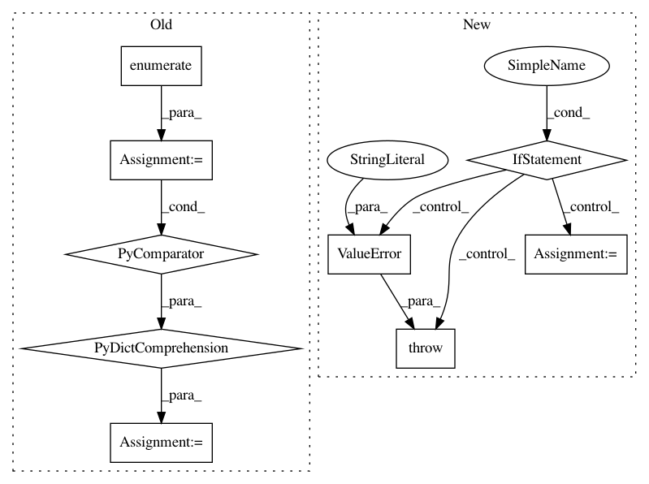

a3400845afb88d0d9b19f7f810abbd718117f24e,src/fonduer/utils/utils_udf.py,,get_sparse_matrix,#Any#Any#Any#Any#,102
Before Change
if key:
keys_map = {key: 0}
else:
keys_map = {
key.name: idx
for (idx, key) in enumerate(get_sparse_matrix_keys(session, key_table))
}
for cand_list in cand_lists:
indptr = [0]
indices = []
After Change
cand_lists = cand_lists if isinstance(cand_lists, (list, tuple)) else [cand_lists]
for cand_list in cand_lists:
if len(cand_list) == 0:
raise ValueError("cand_lists contain empty cand_list.")
candidate_class = cand_list[0].__tablename__
// Keys are used as a global index
if key:
keys_map = {key: 0}
In pattern: SUPERPATTERN
Frequency: 3
Non-data size: 9
Instances
Project Name: HazyResearch/fonduer
Commit Name: a3400845afb88d0d9b19f7f810abbd718117f24e
Time: 2018-10-17
Author: lukehsiao@users.noreply.github.com
File Name: src/fonduer/utils/utils_udf.py
Class Name:
Method Name: get_sparse_matrix
Project Name: automl/auto-sklearn
Commit Name: 9d0ed839dc9df4c9afc5966c1e3276c478a58d53
Time: 2020-09-16
Author: feurerm@informatik.uni-freiburg.de
File Name: scripts/update_metadata_util.py
Class Name:
Method Name: load_task
Project Name: open-mmlab/mmdetection
Commit Name: 9d38a278eacd64cfe45ab92054d03731102c3331
Time: 2018-12-11
Author: chenkaidev@gmail.com
File Name: mmdet/datasets/voc.py
Class Name: VOCDataset
Method Name: __init__
Project Name: HazyResearch/fonduer
Commit Name: a3400845afb88d0d9b19f7f810abbd718117f24e
Time: 2018-10-17
Author: lukehsiao@users.noreply.github.com
File Name: src/fonduer/utils/utils_udf.py
Class Name:
Method Name: get_sparse_matrix